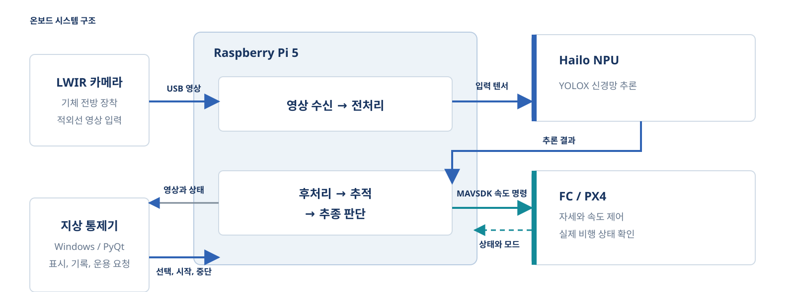
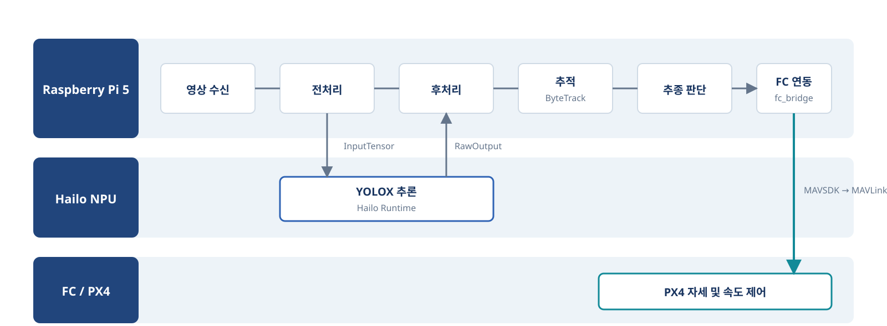
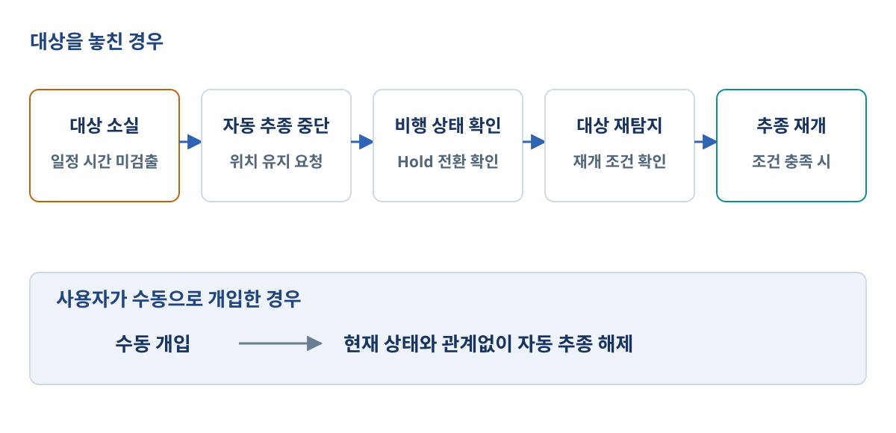

Raspberry Pi 5 + Hailo NPU 온보드 구성
ONBOARD AI / DRONE / OBJECT DETECTION & TRACKING
진행 중ARGUS 온보드 AI 드론 객체 탐지 및 추적 시스템
ARGUS AI-powered Real-time Ground Object UAV Surveillance AI 기반 실시간 지상 객체 무인기 감시
소형 드론에 탑재한 Hailo NPU에서 LWIR 영상을 처리해 지상 객체를 탐지하고 추적하며, 그 결과를 PX4 비행 제어와 연결하는 온보드 시스템을 개발하고 있습니다.
- 기간
- 2026.09–진행 중
- 팀
- ARGUS 6인 팀
- 역할
- 팀장, YOLOX 학습과 Hailo NPU 적용 담당, 일정 및 통합 관리
- 주요 구성
- Raspberry Pi 5 / Hailo NPU / LWIR / PX4
01 / BACKGROUND
온보드 처리가 필요한 이유
무선 링크가 불안정하면 지상 연산에 의존하는 탐지와 추적이 함께 중단될 수 있습니다. 가시광이 약한 환경에서도 차량을 관측하고 외부 연산 장치에 의존하지 않도록, LWIR 영상 처리와 추종 판단을 기체 내부에서 이어가는 구조를 설계했습니다.
YOLOX 기반 LWIR 객체 탐지
프레임 간 동일 대상 ID 유지
대상 위치 오차 기반 속도와 yaw 명령 산출 로직
02 / SYSTEM
연산, AI 추론과 비행 제어의 역할 분리
LWIR 영상은 Raspberry Pi 5에서 수신하고 전처리하며, Hailo NPU에서 YOLOX 추론을 수행하도록 구성했습니다. 이후 추적과 추종 판단 결과를 PX4 비행 제어와 연결하고, 지상 통제기는 상태 확인과 기록, 운용 요청에 사용하도록 역할을 나눴습니다.

03 / PIPELINE
최신 프레임 우선 처리와 모듈 인터페이스
제어 지연이 누적되지 않도록 프레임을 계속 쌓기보다 최신 프레임을 우선 처리하도록 설계했습니다. 탐지, 추적, 추종 판단 사이의 데이터를 분리해 각 모듈의 인터페이스를 정의했습니다.

04 / FAIL-SAFE
대상 소실과 사용자 개입 대응
대상 소실이나 사용자 개입 시 추종 판단을 무효화하고 Hold 요청으로 전환하도록 상태 흐름을 설계했습니다. 재추종 전에는 FC 상태와 재시작 조건을 확인하도록 구성했습니다.
정상 추종 → 대상 소실 → 추종 해제 → FC 상태 확인 → 조건 충족 후 재개

05 / VALIDATION
구현 후 검증 항목
성능, 시스템, 비행 연동, 운용 안전의 네 영역으로 나눠 검증할 예정입니다.
- 성능탐지 정확도, NPU 처리 속도와 end-to-end 지연시간 측정 예정
- 시스템탑재 질량, 전력, 온도와 데이터 처리량 검증 예정
- 비행 연동SITL 검증 후 FC 모드와 실기체 반응 기록 예정
- 운용 안전대상 소실, 수동 개입과 재탐지 시나리오 시험 예정